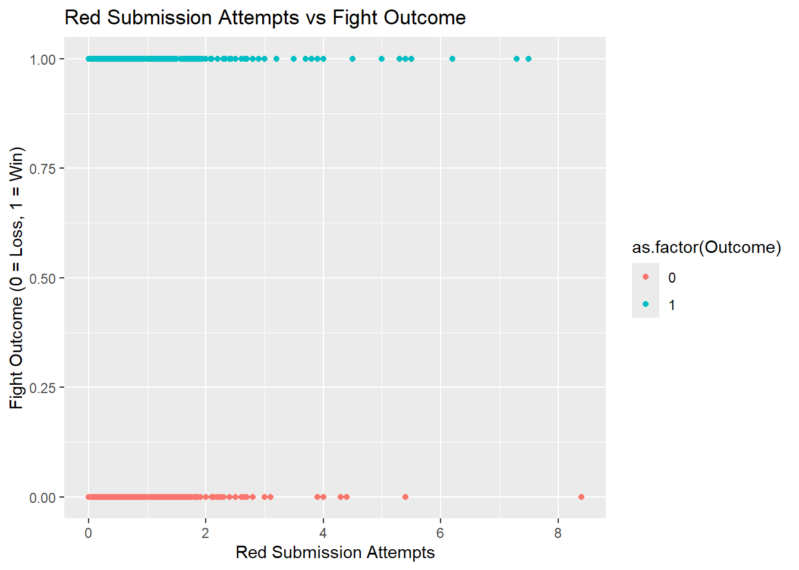

── Attaching core tidyverse packages ──────────────────────── tidyverse 2.0.0 ──
✔ dplyr 1.1.4 ✔ readr 2.1.5
✔ forcats 1.0.0 ✔ stringr 1.5.1
✔ ggplot2 3.5.1 ✔ tibble 3.2.1
✔ lubridate 1.9.3 ✔ tidyr 1.3.1
✔ purrr 1.0.2
── Conflicts ────────────────────────────────────────── tidyverse_conflicts() ──
✖ dplyr::filter() masks stats::filter()
✖ dplyr::lag() masks stats::lag()
ℹ Use the conflicted package (<http://conflicted.r-lib.org/>) to force all conflicts to become errors
library(dplyr)library(broom)library(car) # For VIF calculation
Loading required package: carData
Attaching package: 'car'
The following object is masked from 'package:dplyr':
recode
The following object is masked from 'package:purrr':
some
# Data cleaning and feature engineeringufc_data <- ufc_data %>%mutate(Outcome =ifelse(Winner =="Red", 1, 0), # Binary outcome: 1 for Red win, 0 for Blue winWeightClass =as.factor(WeightClass), TotalRedSubAttempts = RedAvgSubAtt, # Red's submission attemptsTotalBlueSubAttempts = BlueAvgSubAtt,RedBlueSubRatio = TotalRedSubAttempts / TotalBlueSubAttempts,ReachRatio = RedReachCms / BlueReachCms,SigStrRatio = RedAvgSigStrLanded / BlueAvgSigStrLanded ) %>%filter(!is.na(Outcome), !is.na(TotalRedSubAttempts), !is.na(TotalBlueSubAttempts),!is.na(BlueReachCms), !is.na(RedReachCms), !is.na(BlueAvgSigStrLanded), !is.na(RedAvgSigStrLanded),!is.na(TotalFightTimeSecs),!is.na(WeightClass) ) %>%filter(!is.infinite(RedBlueSubRatio), !is.infinite(ReachRatio), !is.infinite(SigStrRatio) )# Check dimensions of the cleaned datasetdim(ufc_data)
[1] 3717 124
Step 2: Exploratory Data Analysis (EDA)
# Summary statistics for numerical variablessummary_stats <- ufc_data %>%summarise(across(where(is.numeric), list(mean = mean, sd = sd, median = median, min = min, max = max), na.rm =TRUE)) %>%pivot_longer(cols =everything(), names_to =c("Variable", ".value"), names_sep ="_")
Warning: There was 1 warning in `summarise()`.
ℹ In argument: `across(...)`.
Caused by warning:
! The `...` argument of `across()` is deprecated as of dplyr 1.1.0.
Supply arguments directly to `.fns` through an anonymous function instead.
# Previously
across(a:b, mean, na.rm = TRUE)
# Now
across(a:b, \(x) mean(x, na.rm = TRUE))
print("Summary statistics for numerical variables:")
# Plot distributions of key numeric variablesggplot(ufc_data, aes(x = TotalRedSubAttempts)) +geom_histogram(binwidth =1, fill ='blue', color ='black') +labs(title ="Distribution of Total Red Submission Attempts", x ="Red Submission Attempts", y ="Frequency")
ggplot(ufc_data, aes(x = TotalBlueSubAttempts)) +geom_histogram(binwidth =1, fill ='red', color ='black') +labs(title ="Distribution of Total Blue Submission Attempts", x ="Blue Submission Attempts", y ="Frequency")
# Relationship between submission attempts and fight outcomeggplot(ufc_data, aes(x = TotalRedSubAttempts, y = Outcome, color =as.factor(Outcome))) +geom_point() +labs(title ="Red Submission Attempts vs Fight Outcome", x ="Red Submission Attempts", y ="Fight Outcome (0 = Loss, 1 = Win)")

ggplot(ufc_data, aes(x = TotalBlueSubAttempts, y = Outcome, color =as.factor(Outcome))) +geom_point() +labs(title ="Blue Submission Attempts vs Fight Outcome", x ="Blue Submission Attempts", y ="Fight Outcome (0 = Loss, 1 = Win)")